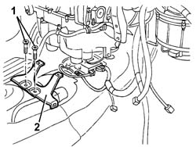
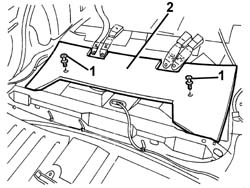
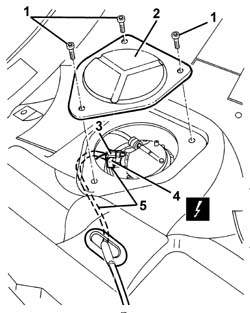
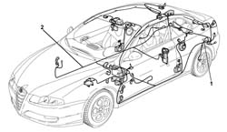

5505C40 CABIN WIRIRNG - R R
- Path
- Procedures > 55 ELECTRICAL EQUIPMENT > 5505 INSTRUMENT/GUAGE ELECTRICAL WIRING > 5505C VEHICLE COMPARTMENT WIRING > 5505C40 CABIN WIRIRNG - R R
- Kind
- repair procedure (removal / refitting; the operation number is the code)
- Applies to
- all engines; all production periods
- Interactive page
- https://sloeber94.github.io/elrnDB-aGt/en/#/125001600
Applies to: engines: 1.8 T.SPARK; all production periods
Applies to: all engines; all production periods
 Removing
Removing
 Refitting
Refitting1. Undo the bolts.
2. Remove the mounting bracket for the air duct to the rear seats.

Applies to: all engines; all production periods
1. Undo the pins anchoring the rear seat.
2. Remove the sound insulation.

Applies to: all engines; all production periods
1. Undo the bolts.
2. Remove the fuel pump access cover.
3. Release the safety tab for the electrical connection.
4. Disconnect the electrical connection.
Name | Connector | |
|---|---|---|
4 | Fuel pump and sender unit | See N40 FUEL PUMP AND SENDER UNIT |
5. Release the electrical connection from the passage between the bodyshell and the fuel tank.

Applies to: all engines; all production periods
Move aside the carpeting and the parts necessary for removal of the integrated wiring.
1. Disconnect the electrical connections and retainers of the integrated wiring.
2. Remove the integrated wiring.

Applies to: all engines; all production periods
Refitting
RemovingCheck that the integrated wiring is not damaged and that the individual conductors are firmly attached to the connections.
Check that the connections are fitted with the anti-slip devices (secondary lock).
If necessary, check the continuity.
Position the integrated wiring.
Connect the electrical connections .
Secure the integrated wiring using the retainers.
Refit and secure the carpeting and the parts moved or removed to remove the integrated wiring.
Fit the electrical connection in the passage between the bodyshell and the fuel tank.
Connect the electrical connection and attach the safety tab.
Position the fuel pump access cover and secure it using the bolts.
Position the sound insulation and tighten the rear seat anchorage pins.
Position the air duct mounting bracket and tighten the bolts.